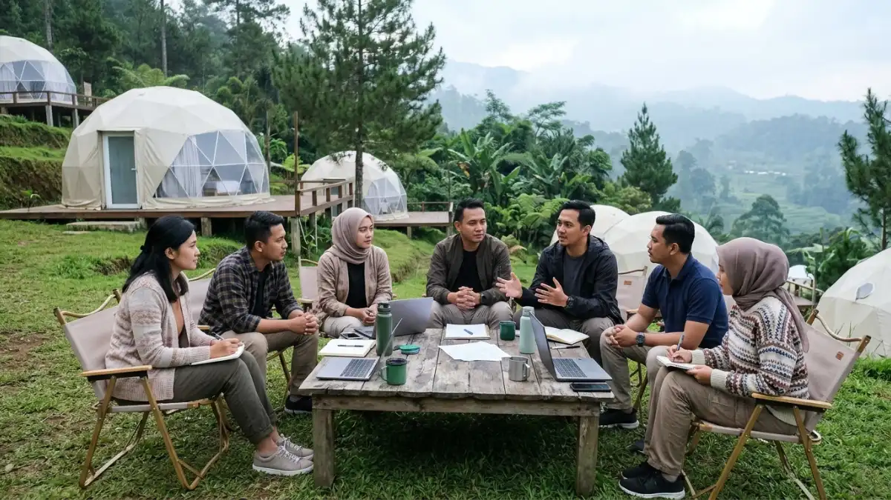

Ilustrasi: Tenda dome glamping yang ditata khusus sebagai ruang
meeting semi terbuka berlatar pemandangan pegunungan asri.
Ilustrasi: Tenda dome glamping yang ditata khusus sebagai ruang
meeting semi terbuka berlatar pemandangan pegunungan asri.
Glamping meeting outdoor adalah pertemuan kerja yang digelar di area perkemahan mewah dengan tenda nyaman, fasilitas lengkap, dan suasana alam terbuka untuk tim.
- Glamping meeting outdoor cocok untuk rapat strategis, workshop, onboarding, dan gathering tim yang membutuhkan suasana segar serta fokus.
- Menurut Grand View Research, pasar glamping global diperkirakan sekitar USD 3,79 miliar pada 2025 dan terus tumbuh hingga 2033.
- Kota Batu mencatat 9.794.603 kunjungan wisatawan sepanjang 2025 berdasarkan data final Dinas Pariwisata setempat.
- Lokasi, fasilitas kerja, sinyal internet, dan rundown lebih menentukan keberhasilan acara daripada tampilan tenda.
- Perencanaan yang matang membantu menghindari agenda terlalu padat, logistik tidak siap, dan anggaran yang membengkak.
- Apa Itu Glamping Meeting Outdoor?
- Mengapa Glamping Meeting Outdoor Makin Diminati pada 2026?
- Apa Saja Manfaat Glamping Meeting Outdoor bagi Tim?
- Bagaimana Cara Kerja Glamping Meeting Outdoor dari Persiapan hingga Penutupan?
- Faktor Penting dalam Memilih Lokasi dan Fasilitas Glamping Meeting Outdoor
- Apa Saja Kesalahan Umum yang Perlu Dihindari?
- Bagaimana Perbandingan Glamping Meeting Outdoor dengan Meeting di Hotel dan Kantor?
- Tips Praktis Agar Glamping Meeting Outdoor Berjalan Efektif
- Kapan Waktu Terbaik dan Siapa yang Cocok Memakai Glamping Meeting Outdoor?
- Kesimpulan
- FAQ
Apa Itu Glamping Meeting Outdoor?
Glamping meeting outdoor menggabungkan kegiatan rapat, workshop, atau gathering dengan akomodasi glamping, yaitu kemah berfasilitas hotel yang memungkinkan peserta bekerja sekaligus menginap di alam terbuka.
Istilah glamping berasal dari gabungan kata glamorous dan camping. Tenda atau dome yang dipakai umumnya memiliki tempat tidur empuk, aliran listrik, penataan interior rapi, serta akses sanitasi yang bersih.
Pada glamping meeting outdoor, area tersebut dilengkapi ruang pertemuan semi terbuka seperti tenda besar, gazebo, atau joglo yang memuat meja kerja, kursi, layar proyektor, dan perangkat suara.
Format ini ditujukan bagi perusahaan, instansi, startup, sekolah, dan komunitas yang ingin menggelar rapat strategis, pelatihan, outing, maupun retreat.
Dibandingkan ruang rapat hotel, penekanannya ada pada suasana alam, interaksi informal, dan kegiatan bersama di luar sesi formal.
Batasannya jelas: cuaca, jarak tempuh, dan kesiapan teknis lokasi dapat memengaruhi jalannya acara, sehingga rencana cadangan perlu disiapkan sejak awal.
Mengapa Glamping Meeting Outdoor Makin Diminati pada 2026?
Permintaan meeting outdoor meningkat karena pasar glamping global tumbuh dan industri MICE Indonesia diproyeksikan bernilai USD 2,5 miliar sampai USD 3,2 miliar pada 2026.
Grand View Research pada Februari 2026 memperkirakan pasar glamping global bernilai USD 3,79 miliar pada 2025 dan naik menjadi USD 7,87 miliar pada 2033, dengan pertumbuhan tahunan majemuk sebesar 9,5 persen untuk periode 2026 sampai 2033.
Lembaga riset lain memakai definisi dan cakupan berbeda sehingga angkanya bervariasi, tetapi arah pertumbuhannya sama. Sumber lengkapnya dapat dilihat pada laporan Grand View Research tentang pasar glamping.
Dari sisi acara bisnis, IECA dan ASPERAPI memproyeksikan industri MICE Indonesia mencapai USD 2,5 miliar hingga USD 3,2 miliar pada 2026, sebagaimana dilaporkan Kontan pada 22 Oktober 2026.
Untuk Kota Batu, Dinas Pariwisata mencatat total 9.794.603 wisatawan sepanjang 2025, menurut data final yang dimuat Malang Post.
Angka itu lebih rendah dibanding 11.005.189 kunjungan pada 2024, sehingga pengelola wisata makin mencari segmen berdurasi menginap seperti meeting dan gathering.
Apa Saja Manfaat Glamping Meeting Outdoor bagi Tim?
Manfaat utamanya meliputi fokus peserta lebih baik, kolaborasi lebih cair, suasana kerja yang segar, dan pengalaman bersama yang memperkuat hubungan antaranggota tim.
Lingkungan yang jauh dari gangguan harian membantu peserta berkonsentrasi pada agenda. Telepon kantor, tamu mendadak, dan interupsi rutin berkurang sehingga diskusi strategis dapat berjalan lebih dalam.
Udara terbuka dan pemandangan alam juga membantu menurunkan ketegangan, terutama pada pertemuan yang membahas topik berat seperti evaluasi tahunan atau perencanaan target.
Manfaat lain muncul di luar sesi formal. Makan malam bersama, api unggun, dan aktivitas kelompok memberi ruang bagi anggota tim dari divisi berbeda untuk saling mengenal. Hubungan yang terbentuk di luar rapat sering memudahkan koordinasi setelah acara berakhir.
Dari sisi penyelenggara, satu lokasi dapat menampung rapat, akomodasi, konsumsi, dan kegiatan hiburan sekaligus.
Hal ini menyederhanakan koordinasi karena vendor yang terlibat lebih sedikit. Manfaat tersebut tetap bergantung pada kualitas perencanaan, bukan semata pada lokasi.

Ilustrasi: Suasana diskusi santai dan interaktif antaranggota tim di area terbuka glamping.Bagaimana Cara Kerja Glamping Meeting Outdoor dari Persiapan hingga Penutupan?
Prosesnya dimulai dari penetapan tujuan dan jumlah peserta, dilanjutkan pemilihan lokasi, penyusunan rundown, penyiapan logistik, pelaksanaan sesi kerja, kegiatan penguatan tim, serta evaluasi.
Tetapkan tujuan acara, misalnya perencanaan strategi, pelatihan, atau penguatan budaya kerja, lalu tentukan jumlah peserta dan durasi menginap.
Pilih lokasi dengan membandingkan fasilitas, akses, dan kemampuan pengelola. Pembahasan rinci mengenai cara memilih glamping meeting outdoor yang tepat membantu penyaringan opsi.
Hitung anggaran dengan memahami komponen paket. Gambaran lengkap tentang biaya glamping meeting outdoor dan penyusunan anggarannya berguna sebelum meminta penawaran.
Susun jadwal kegiatan yang menyeimbangkan sesi kerja dan aktivitas santai. Contoh pembagian waktunya ada pada rundown glamping meeting outdoor yang efektif.
Lakukan survei atau kunjungan singkat, siapkan perlengkapan, dan konfirmasi konsumsi serta transportasi peserta.
Laksanakan acara, catat keputusan penting, lalu lakukan evaluasi singkat pada hari terakhir.
Setiap tahap saling bergantung. Keputusan lokasi, misalnya, akan memengaruhi rundown karena waktu tempuh dan jam matahari terbenam mengubah jadwal sesi.
Faktor Penting dalam Memilih Lokasi dan Fasilitas Glamping Meeting Outdoor
Faktor utama mencakup aksesibilitas lokasi, kapasitas tenda meeting, listrik dan internet stabil, sanitasi bersih, keamanan, serta kesiapan pengelola mendampingi acara.
Akses dan jarak tempuh. Lokasi yang terlalu jauh menyita waktu agenda dan menambah biaya transportasi. Periksa kondisi jalan, terutama pada musim hujan.
Kapasitas dan tata ruang. Pastikan tenda atau gazebo meeting muat untuk seluruh peserta dengan formasi yang diinginkan, seperti teater, kelas, atau kelompok kecil.
Fasilitas teknis. Tanyakan ketersediaan listrik cadangan, kekuatan sinyal seluler, Wi-Fi, proyektor, dan sistem suara.
Kenyamanan menginap. Kebersihan kamar mandi, suhu malam hari, dan kualitas tempat tidur memengaruhi kondisi peserta pada hari kedua.
Keamanan. Periksa pencahayaan area, petugas jaga, dan prosedur darurat.
Pengalaman pengelola. Pengelola yang terbiasa menangani acara perusahaan biasanya lebih siap menghadapi kebutuhan teknis.
Pengecekan langsung ke lokasi tetap menjadi cara paling andal untuk menilai faktor-faktor tersebut, karena foto promosi tidak selalu menggambarkan kondisi sebenarnya.
Apa Saja Kesalahan Umum yang Perlu Dihindari?
Kesalahan yang sering terjadi adalah agenda terlalu padat, survei lokasi dilewatkan, sinyal tidak dicek, tidak ada rencana hujan, dan anggaran tidak memuat biaya tersembunyi.
Agenda yang terlalu padat membuat peserta lelah dan mengurangi manfaat suasana alam. Sesi kerja yang berlangsung sepanjang hari menghilangkan alasan memilih lokasi outdoor, sementara aktivitas santai yang terlalu sedikit membuat acara terasa seperti rapat biasa di tempat berbeda.
Kesalahan berikutnya adalah mengandalkan foto tanpa survei. Kondisi tenda, jarak antarfasilitas, dan kekuatan sinyal sering kali berbeda dari tampilan promosi.
Panitia juga kerap melupakan rencana cadangan untuk hujan, padahal cuaca dapat berubah cepat di kawasan pegunungan.
Terakhir, anggaran yang hanya menghitung harga paket sering meleset. Biaya transportasi, perlengkapan presentasi, konsumsi tambahan, dan asuransi peserta perlu dimasukkan sejak awal.
Penyusunan anggaran yang rapi dapat mengikuti pola pada pembahasan tentang komponen biaya glamping meeting outdoor.
Bagaimana Perbandingan Glamping Meeting Outdoor dengan Meeting di Hotel dan Kantor?
Glamping unggul pada suasana dan interaksi informal, sedangkan hotel dan kantor unggul pada kepastian fasilitas, akses, serta kemudahan pengaturan teknis acara formal.
| Aspek | Glamping meeting outdoor | Meeting di hotel | Meeting di kantor |
|---|---|---|---|
| Suasana | Alam terbuka, santai, memicu interaksi | Formal, nyaman, terkontrol | Rutin, minim variasi |
| Fasilitas teknis | Bergantung pada lokasi dan perlu dicek | Umumnya lengkap dan stabil | Sudah tersedia |
| Ketahanan cuaca | Perlu rencana cadangan | Tidak terpengaruh | Tidak terpengaruh |
| Akses | Sering membutuhkan perjalanan tambahan | Biasanya di pusat kota | Paling mudah |
| Cocok untuk | Retreat, workshop, gathering, perencanaan strategi | Konferensi, rapat resmi, presentasi klien | Rapat harian dan koordinasi rutin |
Tidak ada pilihan yang selalu lebih baik. Rapat dengan klien yang menuntut kesan formal dan kepastian teknis lebih aman di hotel, sedangkan retreat tim yang membutuhkan ide segar dan hubungan antaranggota lebih terbantu oleh glamping.
Tips Praktis Agar Glamping Meeting Outdoor Berjalan Efektif
Tetapkan satu tujuan utama, batasi sesi kerja, siapkan rencana cadangan cuaca, uji peralatan sebelum hari acara, dan sisipkan jeda aktivitas ringan di antara sesi.
Kirim informasi lengkap kepada peserta sebelum berangkat, mencakup jadwal, perlengkapan pribadi, jaket, obat pribadi, dan aturan keselamatan. Peserta yang siap akan lebih nyaman dan tidak menghambat agenda.
Gunakan fasilitator atau pemandu acara untuk menjaga waktu, terutama pada sesi diskusi kelompok. Jadwalkan pekerjaan yang membutuhkan konsentrasi tinggi pada pagi hari, saat energi peserta paling baik, dan pindahkan aktivitas kelompok yang ringan ke sore atau malam.
Terakhir, dokumentasikan hasil diskusi pada hari yang sama. Catatan keputusan, penanggung jawab, dan tenggat tindak lanjut sebaiknya dibagikan sebelum peserta pulang agar semangat acara berubah menjadi tindakan nyata.
Kapan Waktu Terbaik dan Siapa yang Cocok Memakai Glamping Meeting Outdoor?
Waktu terbaik umumnya pada musim kemarau atau hari kerja yang lebih sepi, dan glamping meeting outdoor cocok untuk tim kecil sampai menengah yang butuh fokus.
Musim kemarau mengurangi risiko hujan sehingga kegiatan di luar tenda lebih mudah dijalankan. Hari kerja biasanya lebih lengang dibanding akhir pekan dan libur panjang, sehingga ketersediaan tenda lebih longgar dan suasana lebih tenang.
Data Kota Batu menunjukkan pola kunjungan yang berbeda antartriwulan: triwulan IV 2025 mencatat 3.336.162 wisatawan, sedangkan triwulan III hanya 1.826.689. Pola ini menunjukkan perlunya pemesanan lebih awal pada periode ramai.
Format ini cocok untuk perusahaan yang menggelar perencanaan tahunan, pelatihan kepemimpinan, onboarding karyawan baru, serta pertemuan komunitas.
Untuk acara dengan ratusan peserta atau kebutuhan teknis berat seperti siaran langsung, ruang konvensi biasanya lebih tepat.
Kesimpulan
Glamping meeting outdoor memberi alternatif ruang rapat yang lebih segar bagi tim yang membutuhkan fokus, kolaborasi, dan kebersamaan.
Keberhasilannya ditentukan oleh persiapan tujuan jelas, lokasi yang sudah disurvei, anggaran lengkap, dan rundown yang seimbang. Mulailah dengan menentukan tujuan dan jumlah peserta, lalu bandingkan beberapa lokasi sebelum memesan.
FAQ